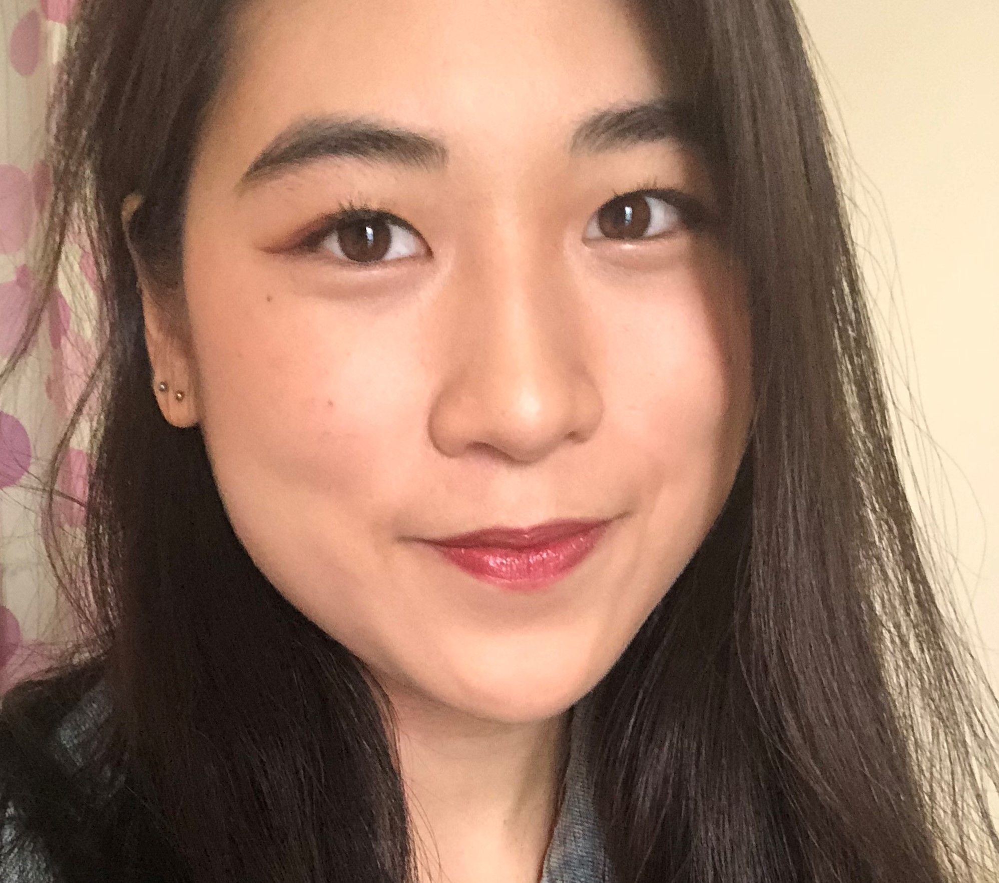

About Me

Ange Yu is currently a program assistant at Northwestern University in the department of Alumni Relations and Development. She graduated from New York University Gallatin School of Individualized Study in 2018 with a BA in Human Computer Interaction. Ange has an interdisciplinary background and experience in visual development, VR production, and UX research. She has been a part of two VR productions as a visual developer and producer ("The Day the World Changed" and "CAVE") which were both showcased in the Tribeca Film Festival. Her interests include virtual reality, 3d printing, gouache painting, and the intersection of art and new media. She likes to wave at dogs.